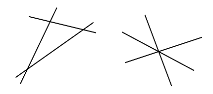

Given a set, $L$, of unique lines, let $M(L)$ be the number of lines in the set and let $S(L)$ be the sum over every line of the number of times that line is crossed by another line in the set. For example, two sets of three lines are shown below:

In both cases $M(L)$ is $3$ and $S(L)$ is $6$: each of the three lines is crossed by two other lines. Note that even if the lines cross at a single point, all of the separate crossings of lines are counted.
Consider points $(T_{2k-1}, T_{2k})$, for integer $k \ge 1$, generated in the following way:
$S_0 = 290797$
$S_{n+1} = S_n^2 \bmod 50515093$
$T_n = (S_n \bmod 2000) - 1000$
For example, the first three points are: $(527, 144)$, $(-488, 732)$, $(-454, -947)$. Given the first $n$ points generated in this manner, let $L_n$ be the set of unique lines that can be formed by joining each point with every other point, the lines being extended indefinitely in both directions. We can then define $M(L_n)$ and $S(L_n)$ as described above.
For example, $M(L_3) = 3$ and $S(L_3) = 6$. Also $M(L_{100}) = 4948$ and $S(L_{100}) = 24477690$.
Find $S(L_{2500})$.